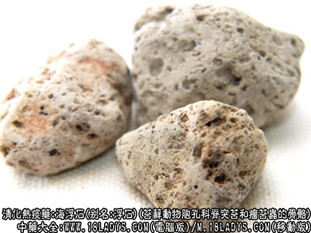

海浮石为较常用中药。原名“浮石”，始载《日华本草》。商品有矿物(浮石)与苔藓动物骨骼(石花)两类。海浮石的功效与作用主要以清肺化痰为主，对于慢性咳嗽，痰热咳嗽咳血等症状有很好的治疗作用。

中药海浮石图片
别名：海浮石。
来源：苔藓动物胞孔科脊突苔和瘤苔虫的骨骼。
产地：主产于福建、浙江其它沿海各地亦产。
性状鉴别：
（1）脊突苔虫：骨骼呈珊瑚样不规则块状，略显扁圆或长圆形。大小不等，直径2～5厘米。灰白色或灰黄色。一面略平坦，另一面多突起，作叉状分枝，中部交织如网状。叉状小枝长3～5毫米，直径约2毫米，先端多折断，少数完整呈钝圆形。质硬而脆，表面而断面均密具细孔。体轻，入水不沉。气微腥，味微腥。
（2）瘤苔虫：骨骼为不规则块状，直径1～3厘米，多为碎块。珊瑚状分枝短，直径约4毫米。先端纯圆，极少折断。呈灰黄色或灰黑色。气微腥，味微咸。
以味咸，质轻，浮于水者为佳。
2、浮石
别名：大海浮石
来源：浮石系矿石。是一种由火山喷出岩浆形成的石块。主要由玻璃质构成。偶然含少量结晶质的矿物。
产地：主产于辽宁、山东、福建、广东、山西等地。
性状鉴别：呈不规则的团块转，大小不一。直径2～7厘米或更大。表面粗糙，灰白色，灰黄或淡褐色。有无数大小不等的孔道，形成多孔性海绵状结构。质硬而松脆，易砸碎。断面疏松，具小孔。体轻，投入水中浮而不沉。气微，味淡。
主要成分：为火山玻璃质（占95%），主含有二氧化硅，又含三氧化二铝等。
炮制：生用或煅用。
性味：咸、寒。
归经：入肺经。
药理作用：清肺热、化老痰、消积块、散瘰疠、止干渴、利小便。主要作用为清热祛痰。
功能：清肺化痰，软坚散结。
主治：痰热咳嗽，瘿瘤痰核。
临床应用：以清肺化痰为主。
1、用于痰热咳嗽、咳血。治慢性咳嗽，痰稠难出，或痰中带血者较适宜，常配蒌仁、黑山栀、诃子等，方如咳血方加减。肺结核、慢性气管炎有上述情况者可用此方。
2、用于瘰疠、瘿瘤，例如配连翘、昆布、元参等治单纯性甲状腺肿，此时海浮石作辅助药用，方如甲状腺肿方。
此外，配伍清热通淋药能加强利尿通淋效果。
用量：9～15g，入丸散剂及汤剂均可。
处方举例：咳血方加减：浮海石9g、诃子肉9g、瓜蒌仁9g、黑山栀6g、生地12g、玄参9g、甘草6g，水煎服。
甲状腺肿方：海藻9g、昆布9g、海浮石12g、浙贝9g、连翘12g、银花12g、元参12g、白芍9g，水煎服。
注：海浮石除上述两类使用地区较广外，商品尚有一种小海石。
来源：为海滨石灰华，是海水中溶解的碳酸钙等盐类围绕贝壳、贝壳碎片或其它沙砾等杂质沉积而成。
产地：山东、销于东北、上海、山东烟台等地。
性状鉴别：呈不规则块状。直径1～2厘米。表面凸凹不平，灰白色或灰黄色，有孔洞而无细孔。质坚体重。断面灰白色。气无，味淡。加稀盐酸溶液，产生大量气泡。
效用：同石花。
成分：浮石含有硅酸盐，石花及小海石均含碳酸钙。中药志称石花的来源为滨珊瑚科黑滨珊瑚的骨骼。
了解更多止咳平喘化痰药，为您推荐↓↓↓↓